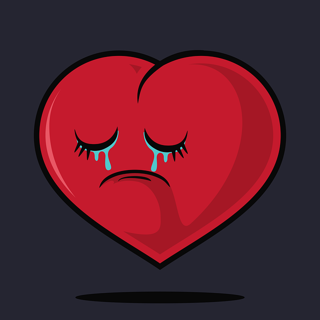

Like with many things, there will always be people who dislikes something. Some people do just see Valentine's Day as nothing more than a shameless cash grab from big chocolate corperations and card companies to make some extra bucks off of "suckers"
Some people dislike it because of the pressure socially of needing to make a big romantic gesture for their significant other. This pressure can add some stress and end up souring people to the Holiday. It can also put a pressure or even sadness on those who don't have a significant other, thus making them bitter towards the Holiday.